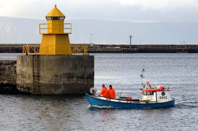

About Us.
For hundreds of years, Icelandic waters have been harvested for European markets; both by foreign fishing fleets and by the Icelandic fleet. This situation made the Icelandic fish well known in Europe and turned the European market into the largest importer of Icelandic seafood products. The United Kingdom has been the most important single market for centuries; it can almost be taken for a home market of the Icelandic fish.Export of seafood to Europe has been increasing the past few years; the aggregate Icelandic seafood export originated to Europe grew from 76% in 2002 to 82% in 2011. The current export value to Europe is around 206 billion ISK (EUR 1.3 billion / USD 1.8 billion).
Besides UK’s status as the largest importer of Icelandic fish, Spain has a very strong tradition of consumption of salted cod; named bacalao by local people. The same applies to Portugal and to a lesser extent to other Southern European countries, where salted fish from Iceland is considered a delicacy.
Western European coastal states, such as the Netherlands, Germany, France and Denmark have through history also been important markets for Icelandic seafood products, mainly fresh or frozen.
The bulk of the export to Europe consists of demersal species and their proportion has grown quite fast in the past few years. A large and rather stable part of this export, however, is comprised of pelagic species, such as capelin and herring, and a significant but declining ratio originates from invertebrates; mainly northern shrimp and nephrops lobster.
Flatfishes, such as plaice and lemon sole, are popular in many western European countries, especially in the UK, the Netherlands and Denmark.
Interesting markets for pelagic species exist throughout Europe. Many European countries have gone through their ”herring periods”, and have subsequently learnt to appreciate this fish and developed their own ways of pickling, salting or smoking the herring. A particularly large market for herring products exists in the Eastern European countries. These markets declined considerably after the collapse of the former Soviet Union. Recently, but have been increasing again lately; as whole frozen (capelin), frozen fillets (herring) or frozen mackerel.
Markets for fishmeal products from the pelagic species are primarily in Norway, the UK and Denmark. The meal is included in feeds for land animals as well as for aquaculture feeds; the market for fish oil is mainly in Norway.
Most of the exports to Europe are frozen; either on board the processing vessel or in processing plants ashore. The fundamental markets for frozen products have been; The UK with cod and haddock (for the traditional British dish; fish and chips) and Germany with frozen redfish and saithe. These markets have been remarkably stable through history, including recent years.
The current increase in exports to Europe is largely due to demand for fresh fish. Markets for fresh iced fish from Iceland are almost exclusively in Europe, mainly because of the relatively short transportation distance by sea or air. Fresh cod fillets are exported to the United Kingdom and France, haddock to the United Kingdom, and redfish to Germany and France. The largest segment of fresh fish exports is as whole fish; transported by container ships. The fish is then sold on foreign markets, where further processing is carried out, or the fish re-exported to other countries.The market for fresh fillets transported by air has grown quite rapidly the past years, fuelled by the rise in their prices. The fillets are processed right after being landed from the vessels and the transported by air to Europe to maximize the product’s freshness and lifetime.
The main markets for salt fish products are the countries of Southern Europe. Portugal and Spain are the strongest markets for split salt fish, followed by Italy and Greece, and Spain and Italy as the main market for salt fish fillets. Salted herring is exported to many countries of northwestern and northeastern Europe with a tradition of herring consumption.

